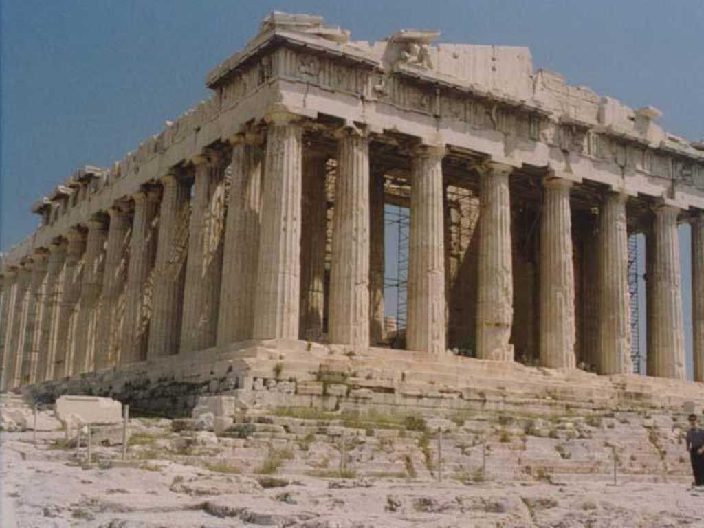
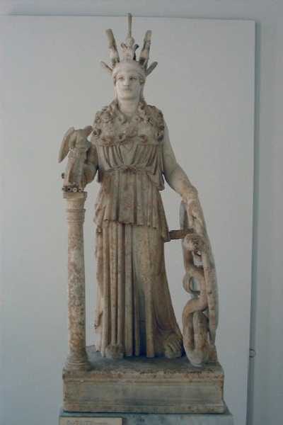
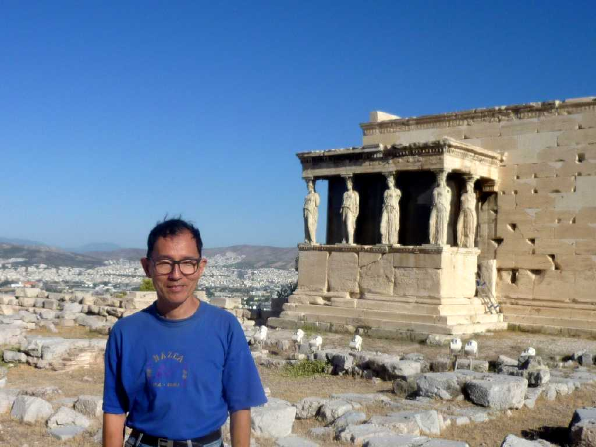
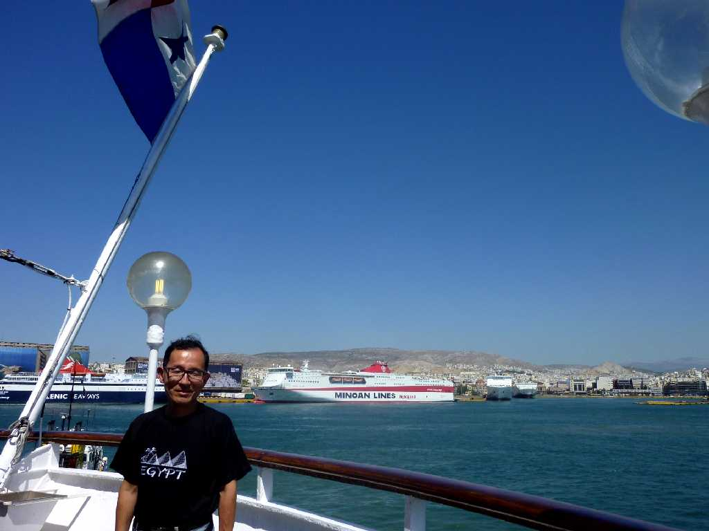
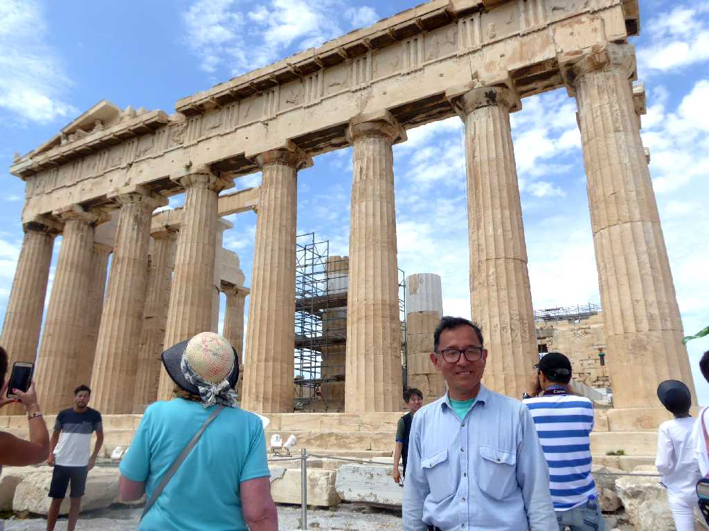
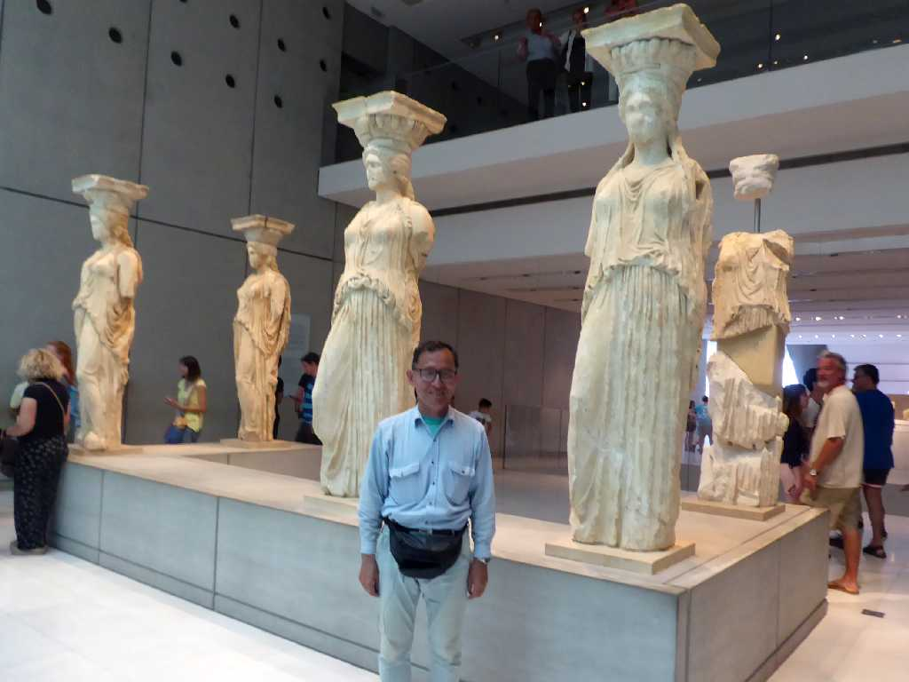

August 1973 Parthenon Athens
アクロポリスの丘の上にあるドーリス様式建築の最高芸術と讃えられる女神アテナを祀った神殿で紀元前４３１年に創られた

Athena Acropolis Museum
このアテナ神はローマ時代に複製された彫像

September 1 2010 Parthenon
約４０年ぶりのアテネパルテノン神殿の再訪問はアテネの外港ピレウス港から上陸

August 31 2010 SS Oceanic in Pireas Port

June 25 2018 Parthenon
世界一周クルーズ以来８年ぶりの再訪問で今回は初めてアテネ以外のギリシャを十分に周りパルテノン神殿は３回目で相変わらずの大混雑

June 25 2018 Caryatids Acropolis Museum Parthenon